Целью данной работы является получение навыков работы с программным средством Fail2ban для обеспечения базовой защиты от атак типа «brute force».
На сервере установим fail2ban (рис. @fig-1):
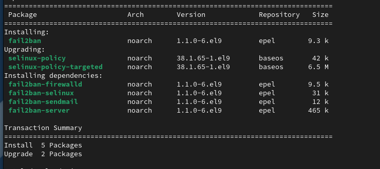
Запустим сервер fail2ban и добавим его в автозагрузку (рис. @fig-2):
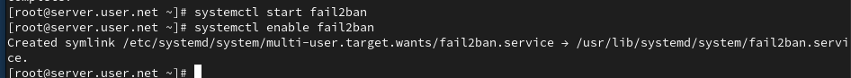
В дополнительном терминале запустим просмотр журнала событий fail2ban (рис. @fig-3):
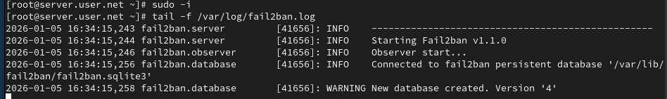
Создадим файл с локальной конфигурацией fail2ban (рис. @fig-4):
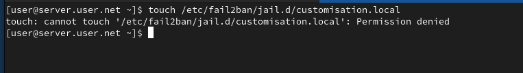
В файле /etc/fail2ban/jail.d/customisation.local зададим время блокирования на 1 час и включим защиту SSH (рис. @fig-5):
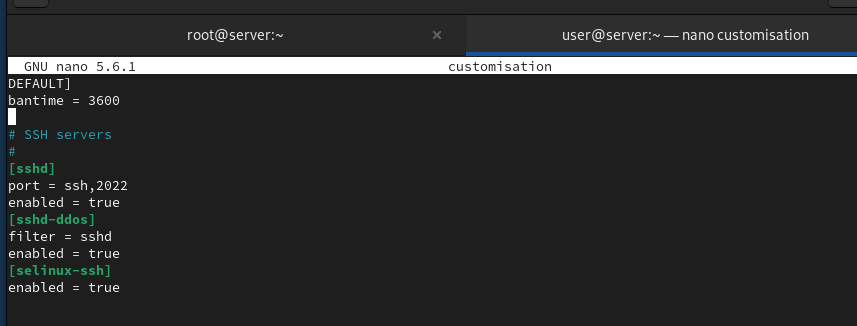
Перезапустим fail2ban для применения изменений (рис. @fig-6):
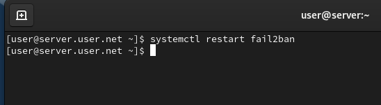
Посмотрим журнал событий после перезапуска (рис. @fig-7):
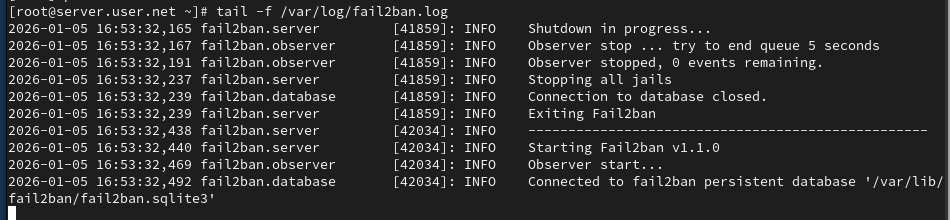
В файле /etc/fail2ban/jail.d/customisation.local включим защиту HTTP (рис. @fig-8):
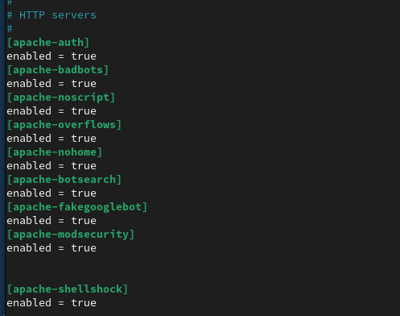
Перезапустим fail2ban и проверим журнал событий (рис. @fig-9, @fig-10):
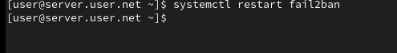
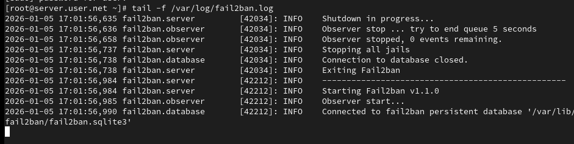
В файле /etc/fail2ban/jail.d/customisation.local включим защиту почты (рис. @fig-11):
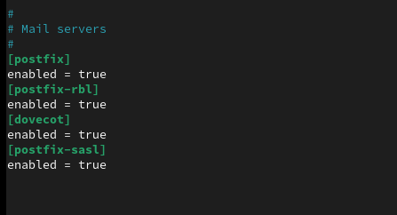
Перезапустим fail2ban и посмотрим журнал событий (рис. @fig-12, @fig-13):
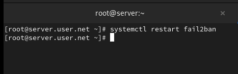
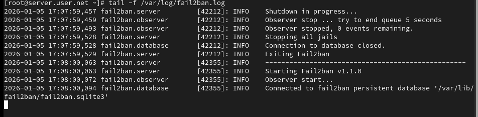
На сервере посмотрим статус защиты SSH и разблокируем IP-адрес клиента (рис. @fig-14):
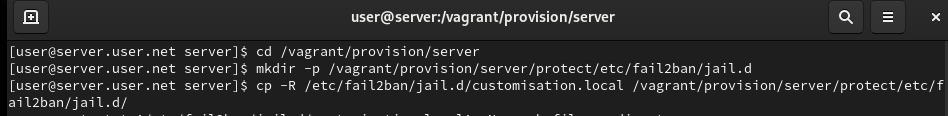
Внесём изменение в конфигурационный файл, добавив игнорирование адреса клиента, и перезапустим fail2ban (рис. @fig-15):
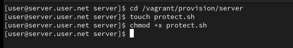
В ходе выполнения лабораторной работы были получены навыки работы с программным средством Fail2ban для обеспечения базовой защиты от атак типа «brute force».
Поясните принцип работы Fail2ban.
Fail2ban является инструментом для защиты от атак на серверы, основанных
на анализе журналов. Он мониторит журналы системы на предмет неудачных
попыток входа или других событий, а затем блокирует IP-адреса атакующих
с использованием системных средств, таких как iptables. Принцип
работы:
Настройки какого файла более приоритетны: jail.conf или
jail.local?
Настройки файла jail.local имеют более высокий приоритет и перекрывают
настройки из jail.conf. Таким образом, если есть конфликтующие
настройки, они будут использоваться из jail.local.
Как настроить оповещение администратора при срабатывании
Fail2ban?
В файле jail.local нужно указать параметр destemail и
задать адрес электронной почты, а также параметр action с
указанием определенного действия (например, action_mw для
отправки почты).
Поясните построчно настройки по умолчанию в
конфигурационном файле /etc/fail2ban/jail.conf, относящиеся к
веб-службе.
Пример настроек для веб-службы в файле jail.conf: